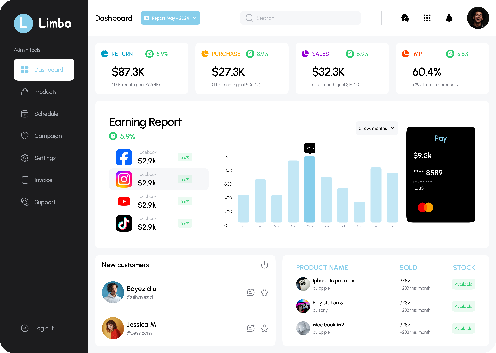

Website Designs


My name is Bayezid. I'm from Bangladesh, and I specialize in mobile app and website UI/UX design. I have designed more than 1,000+ app screens. If you are looking for someone who can help you create the user interface you envision, your last destination is here.
Important: I use Figma UI kit components to design pixel-perfect UI, which makes it easy for developers.
I am excited and eager to work with you!